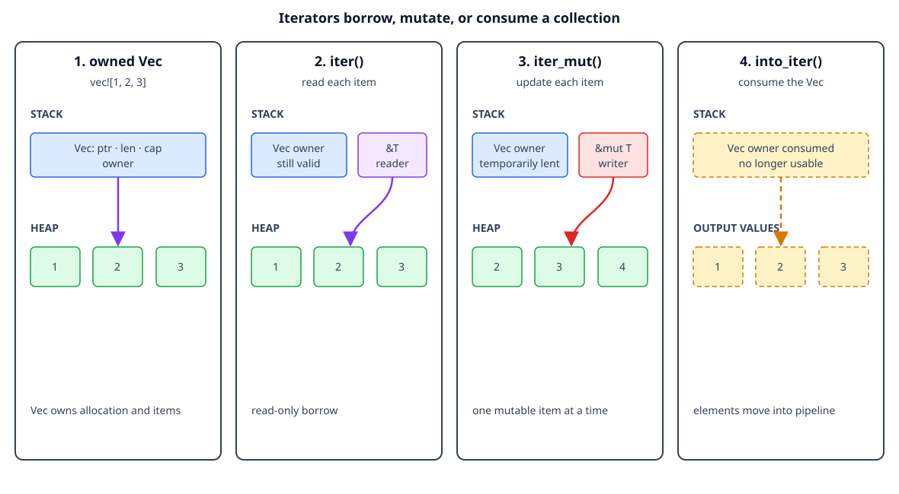

Borrowing collections and iterators
By the end, you will be able to
- Describe what a Rust collection owns.
- Borrow collection data with
iterwithout consuming the collection. - Change elements through
iter_mut. - Explain why
into_iterconsumes an owned collection. - Avoid changing a collection while an element is borrowed.
A brief reminder about Rust collections
Collections hold a variable number of values. Common examples are:
Vec<T>: an ordered, growable sequence.String: growable UTF-8 text.HashMap<K, V>: key-value associations.
These collections usually keep a small handle on the stack and their elements in a heap allocation. The collection owns that allocation and its elements, so Rust needs to know whether an operation is borrowing the elements, changing them, or consuming the collection.
let mut numbers = vec![1, 2, 3];
numbers.push(4); // The Vec owns its elements and may grow its allocation.
Borrowing lets a function work with the elements while the collection remains owned by its caller.

The diagram is conceptual. It shows the Vec handle, heap elements, and
iterator access paths, not literal addresses or allocator metadata.
Checkpoint 1
What does a Vec<T> own?
iter: read elements without consuming the collection
Calling iter() creates an iterator that borrows each element as &T. The
collection remains available after the loop:
fn sum_values(values: &[i32]) -> i32 {
values.iter().sum()
}
let numbers = vec![1, 2, 3];
let total = sum_values(&numbers);
println!("total: {total}");
println!("still owned: {numbers:?}");
The function accepts a slice, a borrowed view of the vector's elements. It does
not move the Vec and it does not clone the values.
Checkpoint 2
What does numbers.iter() yield?
iter_mut: change elements in place
When the collection is mutable, iter_mut() yields &mut T one element at a
time:
fn add_one_to_each(values: &mut [i32]) {
for value in values.iter_mut() {
*value += 1;
}
}
let mut numbers = vec![1, 2, 3];
add_one_to_each(&mut numbers);
println!("{numbers:?}"); // [2, 3, 4]
The iterator provides one mutable element borrow at a time. It does not give the loop unlimited mutable aliases to the same element.
Checkpoint 3
What is the purpose of iter_mut()?
into_iter: consume and own the elements
into_iter() on an owned Vec<T> consumes the vector and yields owned T
values. After the call, the original vector cannot be used:
let numbers = vec![1, 2, 3];
let doubled: Vec<i32> = numbers
.into_iter()
.map(|value| value * 2)
.collect();
println!("{doubled:?}");
// println!("{numbers:?}"); // Error: numbers was consumed.
This is useful when ownership should move into a new collection or processing pipeline. It avoids cloning each element, but the source collection is no longer available.
Checkpoint 4
What happens when numbers.into_iter() is called on an owned Vec?
Do not mutate while an element is borrowed
A vector may move its heap allocation when it grows. Therefore Rust rejects a mutation that could invalidate an element reference:
let mut words = vec![String::from("Rust")];
let first = &words[0];
// words.push(String::from("safe")); // Error: cannot mutably borrow `words`.
println!("{first}");
End the element borrow before changing the vector:
let mut words = vec![String::from("Rust")];
{
let first = &words[0];
println!("before: {first}");
}
words.push(String::from("safe"));
println!("after: {words:?}");
The compiler protects both ownership and reference validity: no reference may continue pointing into a collection whose storage has been invalidated.
Complete runnable example
The lesson displays the same source file used by the matching demo:
fn sum_values(values: &[i32]) -> i32 {
// `iter` borrows each element, so the caller keeps the Vec.
values.iter().sum()
}
fn add_one_to_each(values: &mut [i32]) {
// `iter_mut` gives one mutable borrow of each element in turn.
for value in values.iter_mut() {
*value += 1;
}
}
fn main() {
let mut numbers = vec![1, 2, 3];
let total = sum_values(&numbers);
println!("total: {total}");
add_one_to_each(&mut numbers);
println!("updated: {numbers:?}");
// `into_iter` consumes the Vec and yields owned elements.
let owned_values: Vec<i32> = numbers.into_iter().map(|value| value * 2).collect();
println!("consumed into new Vec: {owned_values:?}");
}
Run it from the repository root:
rustc examples/02-ownership-and-borrowing/06-borrowing-collections-and-iterators/main.rs \
-o /tmp/rust-collection-borrows
/tmp/rust-collection-borrows
Expected output:
total: 6
updated: [2, 3, 4]
consumed into new Vec: [4, 6, 8]
Exercise
- Change
sum_valuesto return the largest element instead of the sum. - Use
iter_mut()to multiply each number by10. - Replace
into_iter()withiter()and explain why the mapping code must change. - Uncomment the invalid
pushexample and read the compiler error.
Checkpoint 5
Which summary correctly compares the three iterator methods?
Next
Continue with slices and API boundaries.